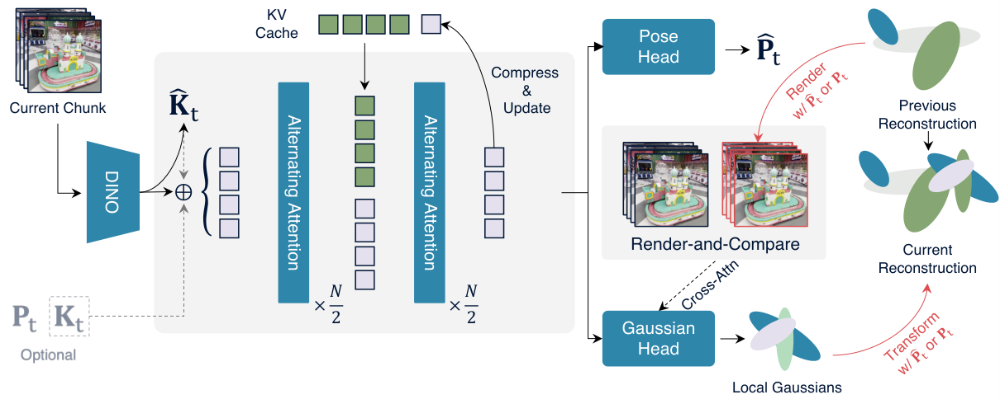
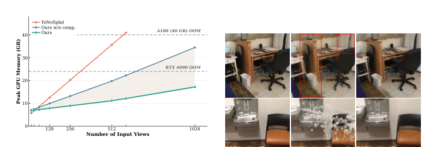
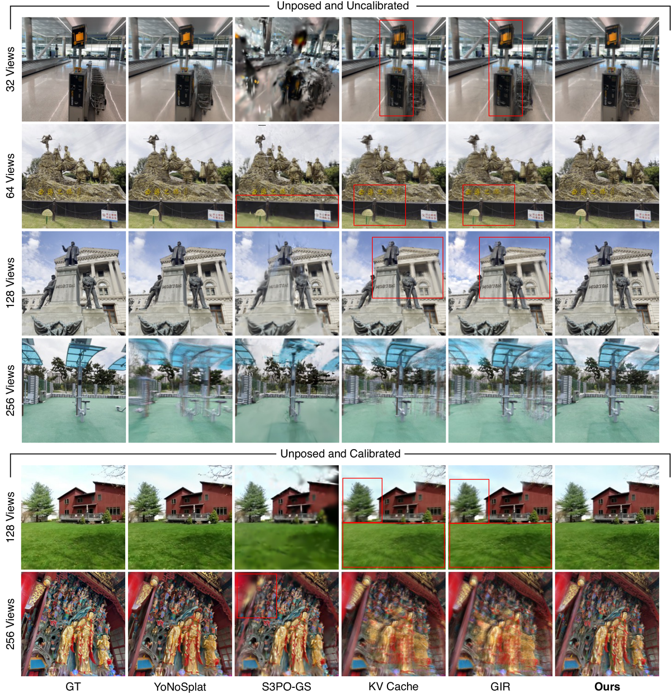
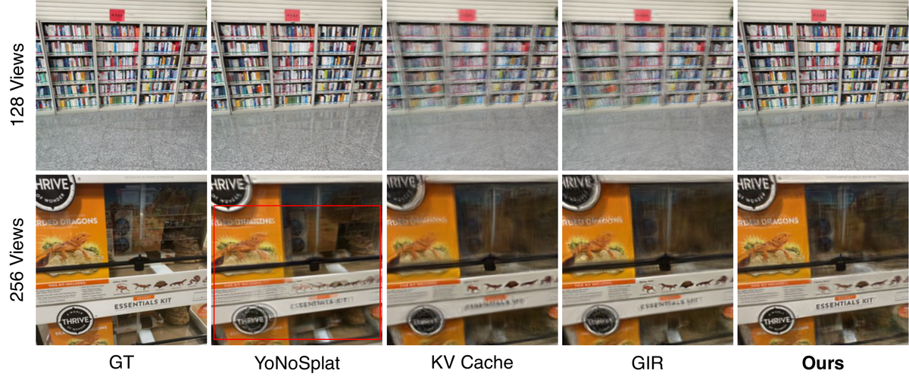

ReCoSplat：高斯泼溅表示、高斯泼溅
简单摘要
我们提出了 ReCoSplat，一种自回归前馈高斯 Splatting 模型，支持有姿势或无姿势输入，有或没有相机内部函数。为了支持长序列，我们提出了一种混合 KV 缓存压缩策略，将早期层截断与块级选择性保留相结合，对于 100 多个帧，将 KV 缓存大小减少了 90% 以上。


核心创新
为了解决这个问题，我们引入渲染和比较（ReCo）模块。 为了支持长序列，我们提出一种混合 KV 缓存压缩策略，将早期层截断与块级选择性保留相结合，对于 100 多个帧，将 KV 缓存大小减少了 90% 以上。
为了解决姿势分布不匹配的问题，我们引入渲染和比较模块，该模块可以从使用地面实况进行训练到使用预测的装配姿势进行推理 与之配套的设计是 在第 2 阶段，我们训练 50k 的额外步骤，并在第一个块之后引入可变的块大小，均匀采样，同时在前 25k 步中将最小值从 8 退火到 4。
技术细节
为了解决使用地面真实装配姿势进行训练时的姿势分布不匹配问题，ReCoSplat 引入了受综合分析框架启发的渲染和比较模块。
因此，当预测新观察的高斯分布时，我们的模块根据装配姿势渲染当前重建并将其与传入图像进行比较。因此、与传入图像进行比较 我们将累积的场景渲染到每个传入视图上，并使用渲染观察的比较作为条件信号，弥合地面实况和预测装配姿势之间的姿势分布不匹配。
虽然这些点图方法擅长几何重建，但它们缺乏实时新颖视图合成的渲染功能，从而激发了我们的前馈自回归高斯泼溅。
其次，它使用 GIR 来编码历史上下文，而我们的渲染和比较模块改进了从地面实况到预测装配姿势的泛化。其次、来编码历史上下文 高斯头根据上采样特征预测基元，每个特征通过交叉注意力以来自渲染和比较模块的标记为条件。
为了解决姿势分布不匹配的问题，我们引入了渲染和比较模块，该模块可以从使用地面实况进行训练到使用预测的装配姿势进行推理。我们引入了渲染和比较模块 然后，我们将渲染与输入图像连接起来并获得条件标记。然后 在场景表示中，3D 高斯由于其高质量的实时渲染而被广泛采用。 我们提出了 ReCoSplat，一种自回归前馈高斯分布方法，用于在有或没有相机内在参数的情况下，从数百张处于姿势或非姿势设置的图像中进行场景重建。 高斯泼溅表示、姿势分布不匹配问题

3 方法
ReCoSplat 的概述如图所示。作者先在这一节把相关输入、状态变量和约束条件摆清楚，这样后面每一步到底依赖什么信息、要满足什么目标就不会悬空。
3.1 问题表述
ReCoSplat 从以非重叠图像块处理的连续图像流重建 3D 场景。 在时间步 ，自回归网络接收新的图像块 、可选的相机参数（内在）和（外在）、来自先前块的 KV 缓存以及包含所有先前预测的 3D 高斯的累积场景。 每组局部高斯函数都在 image 的相机空间中定义。 为了合并到累积的场景中，我们根据输入设置使用地面实况或预测的相机姿势将其转换为世界坐标。姿势将其转换为世界坐标
$$ (\mathbf{G}_t, \hat{\mathbf{K}}_t, \hat{\mathbf{P}}_t, M_t) = f_\theta( \mathbf{I}_t, \mathbf{K}_t, \mathbf{P}_t, M_{t - 1}, S_{t - 1} ), $$
$$ S_t = S_{t-1} \cup \text{Transform}(\mathbf{G}_t, \mathbf{A}_t). $$
3.2 关键结果判据
ReCoSplat 使用基于 YoNoSplat 的自回归主干来处理图像，并通过 KV 缓存进行增强。 给定一个图像块，用 DINOv2 初始化的 ViT 编码器将每个图像映射到全局相机标记和补丁标记。给定一个图像块、标记 相机内在函数是通过两层 MLP 从相机令牌预测的。 补丁标记由 36 层交替注意力变换器解码器、交错帧和全局注意力处理，以产生多视图特征。补丁标记由、层交替注意力变换器解码器 高斯头根据上采样特征预测基元，每个特征通过交叉注意力以来自渲染和比较模块的标记为条件。
$$ [c_t^k, E_t^k] = \text{Encoder}(I_t^k) $$
$$ G_t^k = \Bigl[\text{Head}_\text{xyz}((F_t^k)^{2\times}, Z_t^k),\ \text{Head}_\text{gs}((F_t^k)^{2\times}, Z_t^k),\ \text{Head}_\text{feat}((F_t^k)^{2\times}, Z_t^k)\Bigr]. $$
$$ \mathbf{F}_t, M_t = \text{Decoder}(\mathbf{E}_t, M_{t - 1}). $$
3.3 渲染和比较模块
前者将高斯预测与姿态估计结合起来，限制了重建质量，而后者使预测偏向真实姿态，在推理中使用预测姿态时会产生姿态分布不匹配。 为了解决姿势分布不匹配的问题，我们引入了渲染和比较模块，该模块可以从使用地面实况进行训练到使用预测的装配姿势进行推理。我们引入了渲染和比较模块 对于当前块中的每个图像，我们以其组装姿势渲染累积的场景。 然后，我们将渲染与输入图像连接起来并获得条件标记。然后 由于 的变化直接影响渲染图像，因此该模块改进了推理时预测姿势的泛化（表）。由于
$$ \hat{R}_t^k = \text{Render}(S_{t - 1}, A_t^k) $$
$$ Z_k = \text{Patchify}([I_k, \hat{R}_k]). $$
3.4 高效的长序列重建
扩展 ReCoSplat 来处理数百张图像从根本上受到其变压器架构的内存需求的限制。 持续累积所有全局注意力层中每个图像的 KV 缓存会导致 VRAM 使用量随着序列长度而快速增长，从而导致长序列推理在消费类硬件上变得不切实际。实际 为了克服这个瓶颈，我们引入了两种互补的 KV 缓存压缩策略。 我们基于早期全局注意力层提取局部特征而不是建立多视图对应的发现，引入了 KV 缓存截断机制。引入了、缓存截断机制 对于其余 8 个全局注意力层，完全丢弃历史标记将严重降低重建质量。对于其余、个全局注意力层
3.5 训练 和 推理
培训分三个阶段进行，每个阶段都建立在前一个阶段的基础上，逐步ReCoSplat 的功能。 在第 1 阶段，我们从 YoNoSplat 的 DL3DV-10K 检查点进行初始化，并以学习率 训练 150k 步，保持编码器冻结。高斯泼溅表示、阶段 光度项结合了像素级 MSE ( ) 和感知相似性 ( ) ，在根据预测高斯和保留的地面实况图像渲染的八个新颖目标视图之间进行计算。光度项结合了像素级、和感知相似性
$$ \mathcal{L} = \mathcal{L}_{\text{MSE}} + \mathcal{L}_{\text{LPIPS}} + \mathcal{L}_{\text{intrinsic}} + \mathcal{L}_{\text{extrinsic}} + \mathcal{L}_{\text{opacity}}. $$
$$ A_t^k = \begin{cases} \frac{\text{Scale}(\mathbf{P}_1)}{\text{Scale}(\hat{\mathbf{P}}_1)}P_t^k & \text{if GT extrinsics are available,} \\ \hat{P}_t^k & \text{otherwise.} \end{cases} $$
实验结论
我们在 DL3DV（9,894 次训练/140 次测试）和 ScanNet++（968 次训练/50 次测试）上训练和评估 ReCoSplat，在训练期间以 10:1 的比例采样。对于 ScanNet，我们对以下 8 个场景进行评估，以进行公平比较。我们还包括删除渲染和比较模块的消融，表示为 KV 缓存。
从定性上来说，这些改进如图所示，其中 ReCoSplat 比竞争的在线方法产生更清晰的几何形状和更少的伪影。ReCoSplat 在三个基准测试中始终优于所有自回归基线。


4.1 实验装置
我们在 DL3DV（9,894 次训练/140 次测试）和 ScanNet++（968 次训练/50 次测试）上训练和评估 ReCoSplat，在训练期间以 10:1 的比例采样。对于 ScanNet，我们对以下 8 个场景进行评估，以进行公平比较。我们将 ReCoSplat 与 YoNoSplat 、 FreeSplat 和 S3PO-GS 进行比较，以实现新颖的视图合成。 由于 FreeSplat 仅在 100 个 ScanNet 场景上进行训练，因此我们仅在 ScanNet 上对其进行评估。
4.2 实验结果
我们通过三种输入设置评估 ReCoSplat 的新颖视图合成。在 DL3DV 上，我们使用 32 到 256 个输入视图进行评估，其中场景比例随着视图数量的增加而增加（表 ），并分别使用从整个序列中采样的 90 到 270 个视图（表 ）。为了测试对在线重建任务不友好的具有挑战性的不平滑相机运动的鲁棒性，我们进一步在 ScanNet++ 上进行评估，具有多达 512 个输入视图（表）。 从定性上来说，这些改进如图所示，其中 ReCoSplat 比竞争的在线方法产生更清晰的几何形状和更少的伪影。
4.3 消融研究
我们执行消融来分析 ReCoSplat 中的关键设计选择。Table 使用 128 个输入视图评估块大小的课程学习和 KV 缓存压缩。为了评估这种效果，我们使用预测的装配姿势训练模型。 如表所示，与 KV 缓存基线相比，这显着降低了重建质量。
理解评价
如果把这篇论文放回问题背景里看，它真正的价值在于：我们提出了 ReCoSplat，一种自回归前馈高斯 Splatting 模型，支持有姿势或无姿势输入，有或没有相机内部函数。
最能支撑这个判断的，还是实验给出的证据：为了支持长序列，我们提出了一种混合 KV 缓存压缩策略，将早期层截断与块级选择性保留相结合，对于 100 多个帧，将 KV 缓存大小减少了 90% 以上。
当然，它离真正成熟的方案还有距离：当前方案的主要局限在于它仍然受到计算资源、输入质量或场景复杂度的约束，离真正大规模稳定部署还有距离。 由于变化直接影响渲染图像，因此该模块改进了推理时预测姿势的泛化（表）。